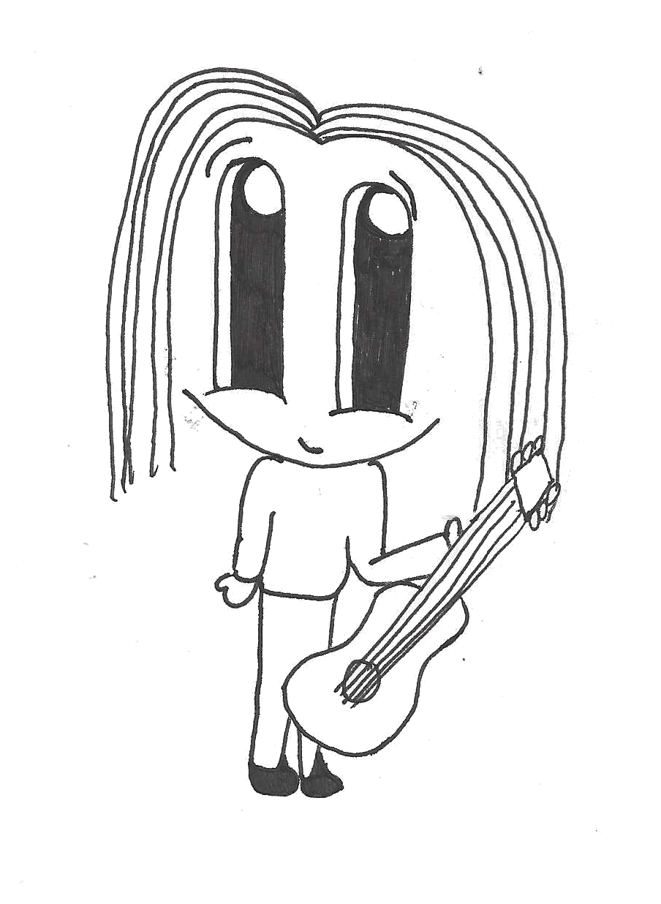

<!-- Main -->
	<div id="main" class="wrapper orangepurple">
		<div class="container">
			<div class="row">

				<!-- Sidebar -->
				<div id="sidebar" class="4u sidebar">
					<section>
						<header class="major">
							<h2>Other activities</h2>
						</header>
						<ul class="default">
							<li><a href="#fairytrail">Cawood Fairy Trail</a></li>
              <li><a href="#youthjam">Young Musicians' Open Jam Session</a></li>
              <li><a href="#beerfest">Wistow's 4th Annual Black Swan Beer Festival</a></li>
						</ul>
					</section>
				</div>

				<!-- Content -->
				<div id="content" class="8u skel-cell-important">
					<section>
						<header class="major">
							<h2>{{ page.title }}</h2>
							<span class="byline">There are lots of activities happening around Cawood over the Cawoodstock weekend</span>
						</header>
            <ul>
              <li class="underlined">
                <h3><a name="fairytrail">Cawood Fairy Trail</a></h3>
                <a href="https://cawoodfairytrail.weebly.com/"></a>
                <p><a href="https://cawoodfairytrail.weebly.com/">Cawood Fairy Trail</a> is a free annual community event held every August Bank Holiday weekend in Cawood. Use the special map to uncover the hiding places of many Fairies and their homes in the gardens throughout the village.</p>
              </li>
              <li class="underlined">
                <h3><a name="youthjam">Young Musicians' Open Jam Session</a></h3>
                <a href="#"></a>
                <p>As part of Cawoodstock, we thought it would be great to encourage talented and keen young Cawoodian musicians to get involved in a jam session. If you haven’t been to a jamming session before, it’s a fun meetup to play music with other musicians in a local cafe. Think of it like a big singalong but with instruments as well as singing!

                <p>We want young musicians of ANY age to come along and play music with us. Bring your instruments, your lyric sheets (and a parent/guardian for the younger players). We’ll have other musicians there, of all different levels of experience - including some from local bands - to help players and singers sound great. You could: play a solo instrumental song you know well, or sing a ‘Joseph’ song along with some friends, sing a pop song with a real band backing, or anything else you like! It’ll be friendly and nobody will feel ‘on the spot’ to play. Anybody can join in with any song and we’ll all have fun and be better musicians!</p>
                <p>Friday 24th August, 3pm - 6pm at the The Pickled Postie Cafe.
                <p>Have Questions? ask on the <a href="https://www.facebook.com/groups/cawoodstock/">Facebook group</a></p>
                <p>Capacity: The Pickled Postie is a cosy venue with space for 20-25 young musicians at absolute capacity, so if you are interested please register your interest <a href="bit.ly/cawoodstock-young-musician-2018">here</a></p>
                <a href="assets/posters-flyers/Cawoodstock Young Musician Jam Session.pdf">Young Musicians' Open Jam Session - A5 Flyer (PDF)</a>
              </li>
            </ul>
					</section>
				</div>

			</div>
		</div>
	</div>
